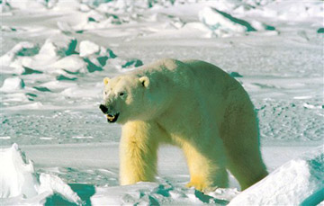
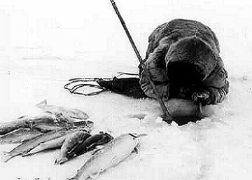
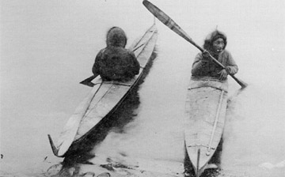

- Το ψάρεμα είναι επίσης μια πολύ σημαντική πηγή ανεύρεσης τροφής, παρόλο που η σπουδαιότητητα της διαφοροποιείται από περιοχή σε περιοχή.
- Σολωμός, πέστροφα και μπακαλιάρος είναι τα βασικά είδη ψαριού με τα οποία μπορεί να τραφεί κάποιος σε περίπτωση ανάγκης.
- Ο πιο συνηθισμένος τρόπος ψαρέματος στην Αρκτική κατά τους χειμερινούς μήνες είναι ανοίγοντας μια τρύπα στο πάγο. Το ψάρεμα μέσα από μια τρύπα σε πάγο μπορεί να γίνει με ένα αγκίστρι και μια πετονιά, αν και μπορείτε να επιτύχετε καλύτερα αποτελέσματα με ένα δίχτυ.
- Το καλοκαίρι, τα ψάρια μπορούν να πιαστούν κατασκευάζοντας φράγματα σε χειμάρρους και ποταμούς.
- Για καλύτερα αποτελέσματα, κάντε δυο τρύπες μέσα στον πάγο και βάλτε ένα δίχτυ ανάμεσα στις δυο τρύπες.
- Αν δεν έχετε δίχτυ, κάντε μερικές τρύπες και τοποθετήστε μερικές δολωμένες πετονιές.
- Προσδέστε τα δίχτυα και τις πετονιές στέρεα σε κοντάρια μακρύτερα σε μήκος από το εύρος της τρύπας του πάγου.
Σημάδια παρουσίας ζώων
Τα σημάδια παρουσίας των ζώων μπορεί να είναι οτιδήποτε, από το αποτύπωμα των πελμάτων των μέχρι το δάγκωμα του φλοιού ενός δέντρου που δείχνει την παρουσία ζώων σε μια περιοχή. Για να μάθει ένας επαγγελματίας κυνηγός το σημάδια χρειάζεται πάρα πολύ χρόνο - πράγμα που ένας επιζήσας δεν έχει στην διαθεσή του. Τα σημάδια σε ένα δέντρο μπορεί να σημαίνουν ή να μην σημαίνουν την παρουσία ζώων, ενώ τα περιττώματα τους αφήνουν ελάχιστο περιθώριο αμφιβολίας. Το σχήμα, το μέγεθος και το χρώμα των περιττωμάτων οποιουδήποτε ζώου έχει ελάχιστο ενδιαφέρον, πέρα από το γεγονός ότι δείχνουν το μέγεθος του ζώου. Κατά τον χειμώνα, είναι εύκολο να ακολουθήσουμε τα ίχνη και τα αποτυπώματα των ζώων και στις περισσότερες φορές οδηγούν στο φυσικό περιβάλλον που ζει το ζώο.
Το κυνηγί στην Αρκτική απαιτεί υπομονή, άσκηση και πείρα. Το να ξέρει κανείς τι να αναζητήσει και που να το αναζητήσει είναι μεγάλη βοήθεια. Τα μεγαλύτερα σε μέγεθος θηράματα, όπως οι τάρανδοι της Βορείου Αμερικής ζούν κυρίως σε χλοότοπους. Ο αδηφάγος (ζώο της οικογένειας των κουναβιών) και η αρκούδα ζουν κυρίως σε δάση, ενώ οι επιπλέοντες πάγοι είναι ο τόπος κατοικίας των πολικών αρκουδών και της φώκιας. Στις χαμηλότερες περιοχές, ζώα όπως οι σκίουροι και οι σκαντζόχοιροι μπορεί να συλληφθούν με το χέρι, αν και το χτύπημα με ένα ραβδί είναι ασφαλέστερο. (Τα αγκάθια του σκαντζόχοιρου πρέπει να αφαιρούνται με κάψιμο, πριν αφαιρεθεί το δέρμα του. Το κρέας του σκαντζόχοιρου, αν και δεν είναι πολύ γευστικό, βοηθάει στην διατήρηση της ζωής.)
Αν και η έκθεση σε ανοικτό περιβάλλον, όπως αναφέραμε και προηγουμένως, κάνει δύσκολη την αθέατη παρακόλουθηση ενός θηράματος, η ευκολία εντοπισμού των ιχνών στο χιόνι είναι σημαντικό πλεονέκτημα όταν είστε στην Αρκτική και πάτε για κυνήγι.
Προετοιμασία του κρέατος
Μόλις συλλάβετε το θήραμα σας και βεβαιωθείτε ότι είναι νεκρό, βάλτε το πάνω σε ένα κομμάτι χιονιού ή πάγου.
Αφαιρέστε το αίμα και τα εντόσθια από το ζώο, βγάζοντας παράλληλα οποιαδήποτε φαγώσιμα ή χρήσιμα όργανα από τα εντόσθια. Αν μπορείτε να μεταφέρετε το θήραμα, χρησιμοποιήστε τα υπόλοιπα εντόσθια για δολώματα σε παγίδες. Η εκδορά του ζώου είναι ευκολότερη όταν το πτώμα του ζώου είναι ακόμη ζεστό. Τυλίξτε ρολό το δέρμα του ζώου από την ανάποδη, πριν παγώσει και στερεώστε το με ένα ιμάντα μεταφοράς, δένοντας το με ένα κομμάτι από έντερο. Αν το ζώο είναι μεγάλο, κόψτε το σε κατάλληλα κομμάτια, έτσι ώστε να μεταφέρεται πιο εύκολα.
Να έχετε υπόψη, ότι το κρέας του ζώου είναι ευκολότερο να κοπεί όταν αυτό είναι ζεστό και εξαιρετικά δύσκολο όταν έχει παγώσει.
Μερικά ζώα είναι φορείς ασθενειών. Συνεπώς, είναι πάντοτε καλύτερα να μαγειρεύετε ή να βράζετε το κρέας του, πριν φαγωθεί. Αποθηκεύστε σε ασφαλές μέρος, ότι σας περισσεύε, διότι υπάρχει πάντοτε κάποιο ζώο που ψάχνει για εύκολη τροφή.
|  |  |  |